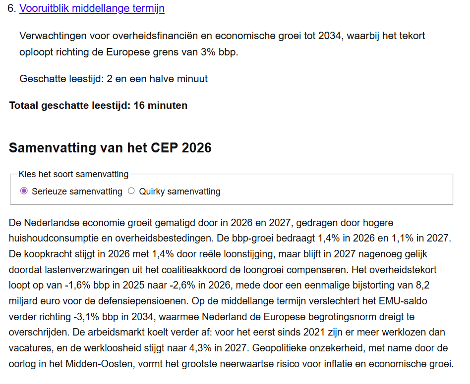

Human Centered
Design
Voor een enkel uniek persoon --> Ihab --> ontwerpen

// Uitkomst
Vaak hoor je als ontwerper over toegankelijkheid en waar je allemaal rekening mee moet houden, zonder een echt beeld te hebben voor welke web gebruikers je het daadwerkelijk doet. Met HCD ga je juist voor zo'n soort unieke webgebruiker aan de slag.
Tijdens HCD heb ik speciaal voor Ihab ontworpen, een student die volledig blind is en op een unieke manier het web moet navigeren met behulp van zijn screenreader. Aan de hand van vier gebruikerstests met Ihab heb ik mijn concept elke week steeds een beetje verfijnd. Het idee om voor hem een inhoudsopgave en samenvatting te genereren voor elke website/pdf. Zo kan hij eenvoudig bepalen welke content hij wilt overslaan.
Zoals ik noemde vond ik het erg interessant om een beeld te hebben voor wie je o.a. designt wanneer je zorgt voor toegankelijkheid. Zo zag ik hoe Ihab handig met zijn screenreader navigeerde maar zeker nog tegen dingen aanliep tijdens tabben door de content.
Ik ben blij met het prototype dat ik voor Ihab heb ontworpen, hij zelf was er ook tevreden mee en gaf aan dat het wel iets was wat hij zou gebruiken als het technisch werkend zou zijn.
Bekijk het project >